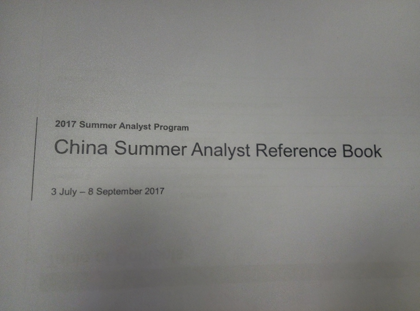
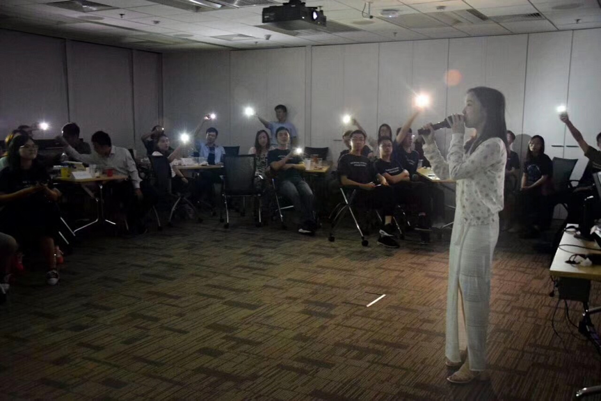
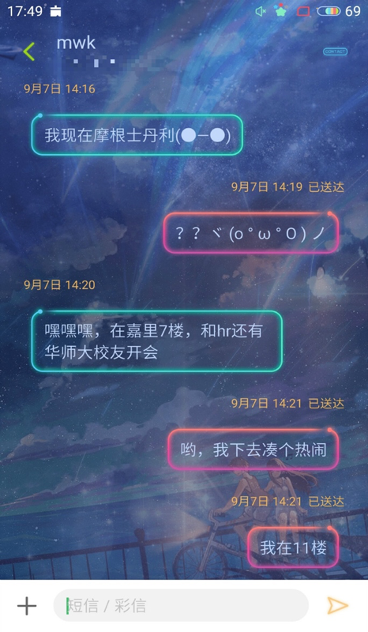

题记
本文记录了我人生的第一次工作（实习）经历——在摩根士丹利上海信息技术部的暑期实习经历。文章综合了笔者的暑期实习日记和记忆整理而成。在实习的第一周我坚持写了一周的实习日记，然而也就坚持了一周，之后就忙得没有精力每天都写了。所以文章的开头部分会参照当时写的日记以天为单位详细记录每天的经历，再往后的部分就不再以天为单位，而是采用概括式的方式讲述。实习全程提供住宿因此我的日记以开始实习前一天到达酒店入住为起点进行记录。
Day0 7.2 周日
一路的奔波转车，到了酒店后已近七点了。交了五百元的入住押金后，拿到了自己的房间号码：1013号。1013？难道我的房间在10楼？想来当初填写的酒店的入住偏好里的偏好住高层还是底层时，自己填写的正是高层。环顾四周，最高的建筑物只是几栋3层的别墅楼啊。然后兜兜转转，竟然发现，这些别墅楼中最远处的一栋一号楼就是自己的房间所在地。原来，有些人被分到的是酒店的标间，有些人则分到的是住别墅楼，没想到自己能成为更为幸运的那部分人，入住了一栋豪华的别墅套房。
整个大套房分为两层，一层由客厅、厨房还有饭厅和阳台组成。厨房里配备了微波炉、冰箱、烤炉、滚筒洗衣机等。由楼梯上二层楼后是两个双人房以及一个单人房。


 本想入住单人房，把自己的行李都放了进去。后来竟然发现这个单人房已经有人来过了，放下行李后就走了。于是就转战双人房，这个双人房里的浴室里还有一个大大的浴缸。同房的室友是来自北邮的研究生，还有其他一位来自清华的大二本科生，以及一位来自华师大的硕士生和另一位博士生，加上我这个本科生，一个屋子里凑齐了华师大本硕博三代人，也是奇观吶。
本想入住单人房，把自己的行李都放了进去。后来竟然发现这个单人房已经有人来过了，放下行李后就走了。于是就转战双人房，这个双人房里的浴室里还有一个大大的浴缸。同房的室友是来自北邮的研究生，还有其他一位来自清华的大二本科生，以及一位来自华师大的硕士生和另一位博士生，加上我这个本科生，一个屋子里凑齐了华师大本硕博三代人，也是奇观吶。
然后就带着一天赶路的疲惫和到别墅入住、明天第一天实习的兴奋劲安稳的入睡了。
Day1 7.3 周一
实习期间每天都有班车接送我们来回住宿区和公司。
 第二天早早起床，坐着班车来到了公司。来到后所有人来到一个大的会议室就坐，七十多张椅子整齐摆满一整个会议厅的场景还是颇为壮观的。每个人的座位上有一些关于我们暑期实习program的材料，其中有一本reference book，讲述整个实习期间重要的活动安排时间点，包括mid-term evaluation, final evaluation以及 volunteer day等。
第二天早早起床，坐着班车来到了公司。来到后所有人来到一个大的会议室就坐，七十多张椅子整齐摆满一整个会议厅的场景还是颇为壮观的。每个人的座位上有一些关于我们暑期实习program的材料，其中有一本reference book，讲述整个实习期间重要的活动安排时间点，包括mid-term evaluation, final evaluation以及 volunteer day等。

Reference Book最末尾有一个类似于花名册的东西，里面有所有实习同学的信息：姓名，照片，学校，专业等信息。自己统计了一下，有8个清华的，3个北大的，人数最多的是交大帮，有大概十七八个交大的（交大这么多人是因为公司和交大有合作的项目，定量输送同学到公司实习，很多同学都不需要经过公司安排的面试就进来了）。海外同学部分还惊现一CMU大佬。
公司为我们报到的这一天安排了全天的讲座，目的是为了让我们初步了解公司文化以及了解公司的各项规章制度。首先由上海的老大给我们演讲，一位毕业自剑桥的大老板，讲着一口语速很快且十分“油滑”的英语，很难抓住从他嘴中吐出的单词，只能硬着头皮能听懂多少就听多少下去。然后还安排了一些有趣的访谈，分别采访了几名公司里的员工以及以前通过实习转正的员工，通过访谈的形式来展示他们所认识的公司是怎样的，他们所理解的公司文化是怎样的。
每个人都被分配了一个manager，中午的时候我们每个人的manager来到我们的那个大会议室，带我们去吃来到公司的第一顿饭。带我的manager是一个已经在公司工作7年的“老司机”。吃饭时简单聊了点学习和公司的话题，然后就又回到了大会议室继续听下午部分的讲座。
下午又继续听讲座。这其中有很多讲座是通过视频会议的形式进行的，因为MS的summer intern是globally在进行的，上海是全球暑期实习项目的其中一个分部，所以有很多讲座通常会是一个这样的形式：一个公司的高层领导在纽约/香港 做讲座，然后通过视频同步转播给全世界的其他分会场，例如上海，东京，首尔等。讲座结束后每个分会场都会有提问的环节，考虑到团队里大牛众多，我也就不那么紧张了，我负责似懂非懂的听讲座，大牛们负责提问，完美（逃

听完下午场的讲座后，已经近6点了，这时候由一个领队似的人物（后来知道这样的人是每个团队里的admin，一些勤务类的工作由他们负责）带着我们各自的人到了自己team的工作区域，然后在自己的manager 的带领下，一个个与组里的人员进行寒暄，握手问好。我的manager带着我一个个去向组里的人问好：“这个人很厉害，不会的可以去问他”、“这个人数学很好，奥数题都去问他就好了”、“这个人就没有他不会的，问他准没错”、“这个人是我们的big boss”、“这个人是我们的big big boss”…… 一轮握手下来，感觉自己在这些巨人面前显得无比的渺小。匆忙的重置了一下自己电脑的开机密码后就下楼赶回酒店的班车了，匆匆的，结束了在公司的第一天生活。
Day2 7.4 周二
上午9点左右来到公司后发现周围只有一两个座位是有人的，看来大家平时的上班时间还是比较晚的。

上午的任务显然先应该熟悉一下电脑的环境，下意识搜了一下自己的本机IP，发现居然是一个美国的地址，果然浏览器中打开YouTube无障碍。由于公司电脑不能自行从网上安装任何的软件，一切软件的安装只能在公司内的应用商店中进行安装，而这个商店中并没有接地气的中文输入法，所以只好用Win7内置的微软中文输入法了，打字体验和搜狗输入法差了好几个档次。熟悉了一个上午的环境，中午和同组的另一个交大的实习生一起出去吃饭的时候才被他提醒outlook邮箱里发了一些下午会议的安排通知，才发现自己一直没有打开过outlook查收邮件，打开后发现收件箱里躺着几十封未读邮件，密密麻麻的排满了未来几天的讲座安排。
下午参加了几个技术相关的会议，主要是介绍公司的一个核心系统，规模大的吓人，编译一次需要两个多小时。人生的第一次实习就要面对一个这么庞大的系统，不禁瑟瑟发抖。
开完连串的会议后回到自己的座位赶忙打开自己的outlook查看邮件，一封封的仔细阅读，到下班时也没能看完，就匆匆下楼赶班车了。
Day3 7.5 周三
今天可以说又是开满一天会的一天，仅次于第一天全天都是会议的密度。早上来到公司，接着看昨天没有看完的邮件。然后发了个skype给manager，问他我需要装什么环境。然后等呀等，等了一个上午发现manager都没出现在座位上，才发现他今天应该是有事没来上班。然后我在内网上看到有个人和我的manager是同一个人，于是我便以为他也是实习生，而且和我一样都是同一个manager，然后就在skype上开启了和他的尬聊时间，问他他有没有问manager我们应该装什么环境等。然后他走来我座位找我，我突然发现他是第一天我就认识了的一个公司正式员工，根本就不是什么实习生。之后上内网看了一下他的个人资料页，果然身份那一栏写的是employee而不是intern。他其实就坐在我的正对面，我们两个人之间就隔着两台各自的电脑屏幕，可以说交流起来是非常方便的。有他的及时热情的协助，我想我能很随时及时的获取自己需要的帮助。
下午的时间又是大片的会议时间，先是一场weekly的和东京的HR 大boss开的电话会议，我们组里的几个实习生和几个员工一起到了一个会议室里用会议室里的电话和电话那边的大boss进行对话，她对着名字一个个叫我们的名字，然后我们就各自轮流对着麦克风和她进行交流。由于这个电话会议和我们的其他一个会议时间重合了，组里的一个经验丰富的老司机在我们做完自我介绍后就把电话挂了，留东京那边的boss继续的自言自语。我们一群实习生当场都被震惊了，居然还有这种操作？那位老司机解释说，那边只知道有一路线路的电话断了，并不知道具体是哪一路，于是我们就放心的去参加另外的一个会议了。总的来说下午都是会议：参加了一场东京的电话会议，然后再参加了一个一小时的电话meeting，然后再参加了一场一个小时的技术training，然后再参加了一个一个半小时的另一场技术training。所有的会议参加完，马上就到下班时间了。
Day4 7.6 周四
来到公司，打开电脑，outlook里收到了昨天一天不在的“manager”发来的对我昨天的skype留言的回复邮件，邮件里说：“Meng is your intern program manager. I’m here to support you.”如坠五里云雾，也就是说，昨天认错的那个employee，其实就是自己的manager，也就坐在我的正对面。
我问他为什么他是我的manager，明明公司内网上的从属关系写的是我的manager是另一个人。他把我叫到一个会议室里然后解释说，公司里和学校里不太一样，学生和导师的关系没有那么的绑定，manager和下属的关系更多的是层级上的关系，而不强调与实际业务上的联系，告诉我要看淡公司里的这种manager关系，身边的人都是可以汲取帮助的对象。然后他又跟我说，他之前是在百度工作的，他来公司并不久，才八个月左右，他介绍道，外企的工作风格和互联网企业的区别在于互联网公司那边崇尚快速有为，怎么快怎么来；而外企则更为注重规范，标准的规范性，代码的规范性等。还有一点就是互联网企业用很多框架，外企特别是摩根这样的安全性极为看着的公司则都是使用的内部的框架。
我的intern project 的 proposal是他撰写的，他之前以为是一组的人来做一个project，所以定了个scope比较巨大的draft，他现在需要再重新调整项目内容。他概略的介绍了下希望能做一个比较流程完整的项目，就是一个提供服务的项目，然后他跟我介绍什么叫一个完整的“服务”：一个完整的服务应该经过的层级分别为分发层、逻辑层、数据存储层。分发层就是对请求进行承接和流量分发等任务，逻辑层就是具体的业务逻辑处理阶段，最后落地的部分是把相关的数据存储在数据库等存储空间中，这三大环节构成了一个服务的框架。然后他具体化到可能想做一个接收HTTP请求，然后对其进行处理，提供其所需的服务的项目。
开完会后回到座位，一直听说C++之父Bjarne Stoustrup 是摩根的员工，于是在公司的内网上搜了下，果然搜到了。公司的内网上有摩根全球所有员工的工作电话和私人电话，于是就这样，居然知道了C++之父的手机号码了，有趣。
很快吃了个午饭，然后12点半又有一个日常的speaker series讲座了，今天schedule里只有一场讲座，真是这几天来最少讲座的一天了。回到座位后开始装环境，安装软件的时候出现了一点问题，那个软件下载的界面一直都加载不出来，我们实习生桌上没有电话，于是只好跑到一个会议室里去打IT求助热线，然后开始和对面进行全程的英语尬聊。一顿支支吾吾的强行交流后，他在skype上与我建立了联系，然后通过远程控制的方式直接帮我把我需要安装的那个软件包推送到了我的电脑里，于是我就可以直接进行安装了。不得不说，公司的IT协助还是非常给力的。
下午差不多两点多的时候公司里突然一阵骚动，大家先后离开自己的座位不知道要去参加什么活动。Manager说有一场头衔很大的CTO的讲座，邀请我也一起去见见世面，于是我就和一群人搭着公司内部的类似紧急逃生专用的电梯快速到了7楼的一个会议室，里面挤满了员工，大部分人都只能站着听演讲，我还以为是有真人进行演讲，没想到还是一场视频演讲，而且又是全程的英文演讲，实在是听着很累，于是听了不到十分钟就溜出来回到自己的座位干自己的事了。
下班后室友迟迟没有回酒店，一直等到十一点多他才回来到房间里，他居然是留在公司里加班配环境了。他研究生快毕业了很想要摩根的offer，而我自己已经保研了，完全不在意有没有得到return offer，所以心态就会比较不同吧。
Day5 7.7 周五
今天的任务比较轻松，主要时间用来学习一堆的公司新员工视频培训，包括公司价值观的学习，各种安全守则、职业操守的强调等。培训视频实在太多了，每个都有差不多半小时的时长，六七个专题培训都需要一个个的看完培训视频才能算完成，一天的时间甚至都来不及看完所有的培训视频。其他主要的任务是和manager一起开会定下intern project的正式内容，最后定了之前manager说的一个请求服务，对一些特定的交易的数据收集、分析，然后进行展示的服务。
总的来说，第一周过得略微忙碌，虽然没有实质的进行什么工作，但是是十分充实的。
接下来的日子便是正正经经的开始“干活”了，之所以这个干活是打了引号的，是因为摩根的实习生主要是以培养为主的，不作为公司的即战力来使用，公司并不期望实习生能为公司带来直接的效益。这与其他一些公司的实习生有很大的区别，比如我的manager之前的公司百度，依他的说法，百度的实习生日常的工作量很大，进了公司就会投入一线的生产中。我的任务就是根据项目的需求学习对应的组件，然后进行对应的实践开发。Manager 选中了Flask，这个Python的流行Web开发库，正好Python我前段时间也学习过一段时间，突然觉得这个项目十分亲切了起来。于是就快速浏览Flask的手册，然后进行服务原型的搭建。这之前还需要对服务进行定义，所以还需要仔细思考什么样格式的参数是合适的，然后整理出一个开发文档出来。Manager又给我分享了Restful API的思想，然后我又和他进行了多番讨论，最终定下了一份较为合理的API格式，然后开始付诸实际的开发。
经过一两天的开发，整个服务的原型已经基本完成，也就是接入层的部分已经完成了。此时，Manager突然笑眯眯的跟我说，有个“有趣的东西”我们可以玩一玩了。他说，他想用gRPC取代现在的Flask做接入层，我问他，这两个东西有什么区别呢？他说，如果现在写的Flask是大众，gRPC就是法拉利。法拉利不法拉利的我不知道，我只知道写了两天的Flask要推倒重来了，莫名有些伤感。
接下来又投入了gRPC的学习海洋里，跨语言，高性能，易用性高，的确是个好东西（后话：最近百度开源了bRPC，据说是强过谷歌的gRPC了，虽然黑百度是某种政治正确，但技术某种时候确实是无界的）。 Manager怕我不好上手，亲自帮我搭了一个基础的原型，然后我在这个原型的基础上进行开发。其实服务的搭建都是相似的，有了之前搭建Flask服务的思想作为基础，迁移成gRPC版本其实还是很快的，没几天gRPC的接入层工作也完成了。此时Manager又继续跟我“搞事”，提出为了提高效能，要做成一个分布式的服务系统，于是又介绍了Zookeeper这个分布式服务，然后存储层他说要做一个redis的高性能存储。所以整个项目的架构其实现在已经很清晰了，就是以Zookeeper为基础，搭建一个基于gRPC的高性能分布式服务提供平台。于是我又马不停蹄地投入了Zookeeper的学习海洋里，分布式的东西实在是不好理解，学了一两天头绪依然很乱，一遍遍的向Manager请教各种原理。Manager也是非常的好，早上来到公司后也会主动找我问我理解了没有，然后继续给我进行讲解。一边理解着Zookeeper，一边编写着逻辑层的逻辑代码，等到理解的差不多了，逻辑层代码页基本完成了，此时再快速的把Zookeeper一搭，接入层和逻辑层已经初步完成了。然后redis再一上，整个项目的数据流路已经都能够跑通了。
 此时暑期实习刚过一半，心中想着接下来的时间应该是比较充足了，可以好好继续进行完善，谁能想到，这个项目已经悄然走向了结尾。
此时暑期实习刚过一半，心中想着接下来的时间应该是比较充足了，可以好好继续进行完善，谁能想到，这个项目已经悄然走向了结尾。
Manager让我写一份项目文档，全方位的描述这个项目，并顺便做一个展示的PPT，下周去给组里的boss们展示。
于是代码层面的工作暂告一段落，开始专心的撰写全英文的项目文档，还要绘制各种图例介绍项目的总体架构，以及每个部分各自的结构，一整周都在忙碌的撰写项目文档，在Manager的修改意见下修改了许多版，然后制作了对应的展示PPT，一遍遍演练着在台上如何介绍自己的项目，可以说有两周时间都用来进行文档的撰写和展示的准备了。到展示的那一天，自己出其的平静，在会议室里对着组里的各大boss们侃侃而谈，完成了自己的展示。
由于一些安全管控的原因，这个项目不能再深入开展下去了。于是再花了点时间完善之前的一些没有完成的小功能，这个项目也就宣告基本完结了。接下来的时间就相对空闲了，更多的时间花在了寻找保研的导师任务上，Manager的重心也一起转到了这个上，我们经常一起讨论怎么选校，怎么选导师的话题，就这样度过了实习的最后一段时光。
好吧，单纯的描述工作经历可能有些乏味，下面我介绍一些实习期间参加的有意义的活动。
———————我是华丽的分界线———————
Speaker Series
Speaker Series是公司为全球暑期实习项目安排的一个系列讲座，基本上一周会安排两场的讲座，时间一般是北京时间中午十二点半，主讲人一般在香港的主会场进行演讲，然后亚洲的其他分会场以视频会议的形式参与。
刚开始的几场讲座大家还是听得很有精神的，初来乍到大家都不敢怎么乱来。从中期开始渐渐走神的人就比较多，开始在做自己的事了。有些嘉宾的英文语速过快，或者声音过低是一方面原因，讲座的主题都是较为高深的金融、企业知识也可能是另一方面的原因。
不同于我们上海、香港会场的几十个人这么大场面，其他的首尔、东京、台北分会场都只有几名实习生，每次出镜的也都是那几张熟悉的面孔，于是我们对这几个会场的人都会比较熟悉。最令人印象深刻的是首尔分会场的一个韩国小哥，他承包了首尔方向的每次提问，每次镜头转到首尔会场都会马上出现他那憨态可掬的大笑脸，然后再憋出一个他们的问题进行提问。每次镜头切到首尔时都会引发我们的一阵高潮，因为他的那张大笑脸又出现了。

（这张图非常的喜感，左二是那个韩国小哥，右一的女的一副生无可恋的脸，右二的男的已经睡着了…）
Charity Day
每年的暑期是摩根的全球志愿者月，公司号召员工外出进行志愿者活动。为了让实习生也体会到公司的这部分文化，我们参与了Charity Day的活动——为小朋友制作各式的卡片，有画奥运会图标的，也有画动漫对话的。


China Day
摩根在中国大陆有摩根士丹利华鑫证券、摩根士丹利华鑫基金等合资公司，China Day就是请来自这些摩根合资公司的高管来上海嘉里城给我们做演讲，主要是介绍他们各自公司的概括，发展历史，以及他们的职场经历分享等。
Quiz Night
Quiz Night是一个由大家自己组织节目，纯娱乐性的一个晚会。吃着大家投票出来高票当选的人气Pizza，以组为单位，进行各种抢答、趣味游戏，最后总分最高的组可以获得一些奖励的礼品。 
Boss Meeting
有一个周五的下午，我们组的boss突然发消息给我们让我们到会议室里集合。到了之后发现这是一场畅谈会，大家有的没的，工作上的，私人的事，都尽管随便聊。Manager说这种会很久才能遇到一次，基本上boss什么时候一时兴起了就会弄一次这样的会，这次正好给我们赶上了。
我们的boss从复旦毕业后就进来摩根工作了，一直几十年都在摩根，所以摩根的各种大小历史他可以说是无所不知，不管什么时候跟他聊天，任何一件小事他都可以扯出一段长长的历史，然后讲个三十分钟不停歇。所以基本上每次有boss在的开会场合，都是以他讲半小时的历史课开始的。历史课后，就开始群魔乱舞，各自谈天说地了。从美帝的治安安全聊到纽约交易所的光纤建造，再加上有我Manager这个政治阴谋论爱好者，会议上又多了一些脑洞大开的政治阴谋论。不管怎么说，和一群有几十年社会阅历，特别是海外阅历的人们聊天肯定对人生经验的增加是很有帮助的。
School Activities
-
School Meeting
在某一个工作日的下午，我突然收到mwk老师发来的短信：

原来他蒲院长一起来公司和摩根校友，以及HR一起开会商讨合作计划呢。在mwk老师的邀请下，我这个事先没有收到邀请参会的人强行进行了参会，然后参与了各种热烈的讨论。主要话题就是关于学生的就业选择，以及校企之间如何合作等。
-
Campus Budget
每年的Summer Intern期间会有一笔校友活动经费，所以按校友员工们的说法，他们很欢迎我们的到来，因为他们又可以有钱吃吃吃了。华师大的实习同学实在不多，满打满算就四个，我作为唯二的本科生，另一个同学已经离开去美帝上学了，所以变成了唯一的本科代表了，然后另外两个同学还又因为各种原因不来聚餐，所以这个聚餐我就成了唯一一个参加的Intern了。由于我所代表的Intern占人数的极少数，所以话题不可避免的多数都是聊他们工作的日常，而不是聊我们Intern的日常，不免有些距离感。不过也管不了这么多了，有好饭好酒下肚，就已经知足了罢。